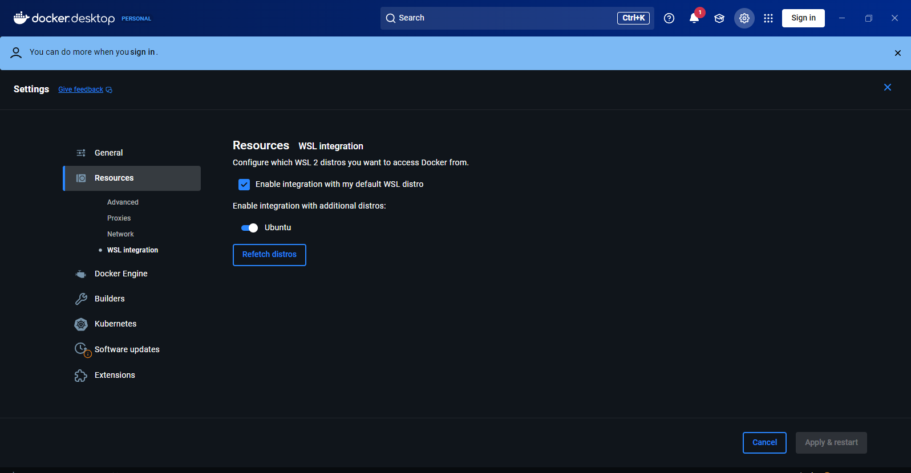

Workshop MLOps avec Azure - Guide Pratique
1 Introduction
1.1 Bienvenue !
Ce workshop vous guidera à travers le déploiement complet d’un modèle de Machine Learning en production sur Microsoft Azure. Vous allez construire une API de prédiction de défaillance client (churn) et la déployer sur le cloud avec toutes les bonnes pratiques MLOps.
1.2 Objectifs d’Apprentissage
À la fin de ce workshop, vous serez capable de :
- Entraîner et sauvegarder un modèle ML avec MLflow
- Créer une API REST avec FastAPI
- Conteneuriser une application avec Docker
- Déployer sur Azure Container Apps
- Mettre en place un pipeline CI/CD avec GitHub Actions
- Monitorer votre application en production
- Détecter le data drift
1.3 Le Projet : Bank Churn Prediction
Contexte : Une banque souhaite prédire quels clients risquent de partir pour proposer des actions de rétention.
Dataset : 10 features (âge, score crédit, solde, etc.) + 1 target (Exited : 0/1)
Modèle : Random Forest Classifier
Livrable : API REST déployée sur Azure, accessible publiquement
1.4 Architecture Finale
Flux de déploiement :
Code GitHub → GitHub Actions → Docker Build → Azure Container Registry → Azure Container Apps → Internet
2 Préparation de l’Environnement
2.1 Logiciels Requis
Obligatoire :
- Python 3.9+ : https://www.python.org/downloads/
- Visual Studio Code : https://code.visualstudio.com/
- Git : https://git-scm.com/downloads
- Docker Desktop : https://www.docker.com/products/docker-desktop
- Azure CLI : https://docs.microsoft.com/cli/azure/install-azure-cli
Comptes à créer :
- Compte GitHub : https://github.com/signup
- Azure for Students (100$) : https://azure.microsoft.com/students
2.2 Vérification de l’Installation
Ouvrez un terminal et testez :
# Python
python --version
# Doit afficher Python 3.9.x ou superieur
# Git
git --version
# Docker
docker --version
docker ps
# Azure CLI
az --version2.3 Configuration Initiale
2.3.1 Configuration Git
git config --global user.name "Votre Nom"
git config --global user.email "votre.email@example.com"2.3.2 Connexion à Azure
# Se connecter a Azure
az login
# Verifier l'abonnement
az account show
# Si vous avez plusieurs abonnements, selectionner celui de Students
az account set --subscription "Azure for Students"3 Module 1 : Entraînement du Modèle
3.1 Objectif
Entraîner un modèle Random Forest pour prédire le churn et le sauvegarder avec MLflow.
3.2 Préparation du Projet
# Creer le dossier du projet
mkdir bank-churn-mlops
cd bank-churn-mlops
# Creer un environnement virtuel
python -m venv venv
# Activer l'environnement
# Windows :
venv\Scripts\activate
# Mac/Linux :
source venv/bin/activate
# Creer la structure
mkdir -p data model app tests
touch requirements.txt3.3 Fichier requirements.txt
Créez le fichier requirements.txt avec le contenu suivant :
# API Framework
fastapi==0.104.1
uvicorn[standard]==0.24.0
pydantic==2.5.0
# Machine Learning
scikit-learn==1.3.2
pandas==2.1.3
numpy==1.26.2
joblib==1.3.2
# MLflow
mlflow==2.8.1
# Testing
pytest==7.4.3
pytest-cov==4.1.0
httpx==0.25.2
# Utilities
python-multipart==0.0.6
requests==2.31.0Puis installez les dépendances :
pip install -r requirements.txt3.4 Téléchargement du Dataset
Créez un dataset synthétique :
# generate_data.py
import pandas as pd
import numpy as np
np.random.seed(42)
n_samples = 10000
data = {
'CreditScore': np.random.randint(300, 850, n_samples),
'Age': np.random.randint(18, 80, n_samples),
'Tenure': np.random.randint(0, 11, n_samples),
'Balance': np.random.uniform(0, 200000, n_samples),
'NumOfProducts': np.random.randint(1, 5, n_samples),
'HasCrCard': np.random.choice([0, 1], n_samples),
'IsActiveMember': np.random.choice([0, 1], n_samples),
'EstimatedSalary': np.random.uniform(20000, 150000, n_samples),
'Geography_Germany': np.random.choice([0, 1], n_samples),
'Geography_Spain': np.random.choice([0, 1], n_samples),
}
# Target : plus de chance de partir si inactif, peu de produits, etc.
churn_prob = (
(1 - data['IsActiveMember']) * 0.3 +
(data['NumOfProducts'] == 1) * 0.2 +
(data['Age'] > 60) * 0.15 +
(data['Balance'] == 0) * 0.25
)
data['Exited'] = (np.random.random(n_samples) < churn_prob).astype(int)
df = pd.DataFrame(data)
df.to_csv('data/bank_churn.csv', index=False)
print(f"Dataset cree : {len(df)} lignes")
print(f"Taux de churn : {df['Exited'].mean():.2%}")3.5 Script d’Entraînement
Créez le fichier train_model.py :
import pandas as pd
import numpy as np
from sklearn.model_selection import train_test_split
from sklearn.ensemble import RandomForestClassifier
from sklearn.metrics import (
accuracy_score,
precision_score,
recall_score,
f1_score,
roc_auc_score,
confusion_matrix
)
import joblib
import mlflow
import mlflow.sklearn
import matplotlib.pyplot as plt
import seaborn as sns
# Configuration MLflow
mlflow.set_tracking_uri("./mlruns")
mlflow.set_experiment("bank-churn-prediction")
print("Chargement des donnees...")
df = pd.read_csv("data/bank_churn.csv")
print(f"Dataset : {len(df)} lignes, {len(df.columns)} colonnes")
print(f"Taux de churn : {df['Exited'].mean():.2%}")
# Separation features/target
X = df.drop('Exited', axis=1)
y = df['Exited']
# Split train/test (80/20)
X_train, X_test, y_train, y_test = train_test_split(
X, y, test_size=0.2, random_state=42, stratify=y
)
print(f"\nTrain : {len(X_train)} lignes")
print(f"Test : {len(X_test)} lignes")
# Entrainement avec MLflow tracking
print("\nEntrainement du modele...")
with mlflow.start_run(run_name="random-forest-v1"):
# Parametres du modele
params = {
'n_estimators': 100,
'max_depth': 10,
'min_samples_split': 5,
'random_state': 42
}
# Entrainement
model = RandomForestClassifier(**params)
model.fit(X_train, y_train)
# Predictions
y_pred = model.predict(X_test)
y_proba = model.predict_proba(X_test)[:, 1]
# Calcul des metriques
accuracy = accuracy_score(y_test, y_pred)
precision = precision_score(y_test, y_pred)
recall = recall_score(y_test, y_pred)
f1 = f1_score(y_test, y_pred)
auc = roc_auc_score(y_test, y_proba)
# Log des parametres et metriques dans MLflow
mlflow.log_params(params)
mlflow.log_metrics({
"accuracy": accuracy,
"precision": precision,
"recall": recall,
"f1_score": f1,
"roc_auc": auc
})
# Creation et sauvegarde de la matrice de confusion
cm = confusion_matrix(y_test, y_pred)
plt.figure(figsize=(8, 6))
sns.heatmap(cm, annot=True, fmt='d', cmap='Blues')
plt.title('Matrice de Confusion')
plt.ylabel('Vraie Classe')
plt.xlabel('Classe Predite')
plt.savefig('confusion_matrix.png')
mlflow.log_artifact('confusion_matrix.png')
plt.close()
# Feature importance
feature_importance = pd.DataFrame({
'feature': X.columns,
'importance': model.feature_importances_
}).sort_values('importance', ascending=False)
plt.figure(figsize=(10, 6))
plt.barh(feature_importance['feature'], feature_importance['importance'])
plt.xlabel('Importance')
plt.title('Feature Importance')
plt.tight_layout()
plt.savefig('feature_importance.png')
mlflow.log_artifact('feature_importance.png')
plt.close()
# Enregistrement du modele dans MLflow
mlflow.sklearn.log_model(
model,
"model",
registered_model_name="bank-churn-classifier"
)
# Sauvegarde locale du modele
joblib.dump(model, "model/churn_model.pkl")
# Tags
mlflow.set_tags({
"environment": "development",
"model_type": "RandomForest",
"task": "binary_classification"
})
# Affichage des resultats
print("\n" + "="*50)
print("RESULTATS DE L'ENTRAINEMENT")
print("="*50)
print(f"Accuracy : {accuracy:.4f}")
print(f"Precision : {precision:.4f}")
print(f"Recall : {recall:.4f}")
print(f"F1 Score : {f1:.4f}")
print(f"ROC AUC : {auc:.4f}")
print("="*50)
print(f"\nModele sauvegarde dans : model/churn_model.pkl")
print(f"MLflow UI : mlflow ui --port 5000")3.6 Exécution
# Lancer l'entrainement
python train_model.py
# Voir les resultats dans MLflow UI
mlflow ui --port 5000
# Ouvrir http://localhost:5000 dans votre navigateur3.7 Checkpoint
Avant de passer au module suivant, vérifiez que :
4 Module 2 : Création de l’API avec FastAPI
4.1 Objectif
Créer une API REST qui expose le modèle via des endpoints HTTP.
4.2 Structure du Code API
bank-churn-mlops/
|-- app/
| |-- __init__.py
| |-- main.py
| |-- models.py
| +-- utils.py
|-- model/
| +-- churn_model.pkl
|-- tests/
| +-- test_api.py
|-- requirements.txt
+-- README.md4.3 Fichier app/models.py
Définition des schémas de données avec Pydantic :
from pydantic import BaseModel, Field
from typing import List
class CustomerFeatures(BaseModel):
"""Schema pour les features d'un client"""
CreditScore: int = Field(..., ge=300, le=850, description="Score de credit")
Age: int = Field(..., ge=18, le=100, description="Age du client")
Tenure: int = Field(..., ge=0, le=10, description="Anciennete en annees")
Balance: float = Field(..., ge=0, description="Solde du compte")
NumOfProducts: int = Field(..., ge=1, le=4, description="Nombre de produits")
HasCrCard: int = Field(..., ge=0, le=1, description="Possession carte credit")
IsActiveMember: int = Field(..., ge=0, le=1, description="Membre actif")
EstimatedSalary: float = Field(..., ge=0, description="Salaire estime")
Geography_Germany: int = Field(..., ge=0, le=1, description="Client allemand")
Geography_Spain: int = Field(..., ge=0, le=1, description="Client espagnol")
class Config:
schema_extra = {
"example": {
"CreditScore": 650,
"Age": 35,
"Tenure": 5,
"Balance": 50000,
"NumOfProducts": 2,
"HasCrCard": 1,
"IsActiveMember": 1,
"EstimatedSalary": 75000,
"Geography_Germany": 0,
"Geography_Spain": 1
}
}
class PredictionResponse(BaseModel):
"""Schema pour la reponse de prediction"""
churn_probability: float = Field(..., description="Probabilite de churn (0-1)")
prediction: int = Field(..., description="Prediction binaire (0=reste, 1=part)")
risk_level: str = Field(..., description="Niveau de risque (Low/Medium/High)")
class HealthResponse(BaseModel):
"""Schema pour le health check"""
status: str
model_loaded: bool4.4 Fichier app/main.py
L’API principale :
from fastapi import FastAPI, HTTPException
from fastapi.middleware.cors import CORSMiddleware
import joblib
import numpy as np
from typing import List
import logging
import os
from app.models import CustomerFeatures, PredictionResponse, HealthResponse
# Configuration du logging
logging.basicConfig(level=logging.INFO)
logger = logging.getLogger(__name__)
# Initialisation FastAPI
app = FastAPI(
title="Bank Churn Prediction API",
description="API de prediction de defaillance client",
version="1.0.0",
docs_url="/docs",
redoc_url="/redoc"
)
# CORS pour permettre les requetes depuis un navigateur
app.add_middleware(
CORSMiddleware,
allow_origins=["*"],
allow_credentials=True,
allow_methods=["*"],
allow_headers=["*"],
)
# Chargement du modele au demarrage
MODEL_PATH = os.getenv("MODEL_PATH", "model/churn_model.pkl")
model = None
@app.on_event("startup")
async def load_model():
"""Charge le modele au demarrage de l'API"""
global model
try:
model = joblib.load(MODEL_PATH)
logger.info(f"Modele charge avec succes depuis {MODEL_PATH}")
except Exception as e:
logger.error(f"Erreur lors du chargement du modele : {e}")
model = None
@app.get("/", tags=["General"])
def root():
"""Endpoint racine"""
return {
"message": "Bank Churn Prediction API",
"version": "1.0.0",
"status": "running",
"docs": "/docs"
}
@app.get("/health", response_model=HealthResponse, tags=["General"])
def health_check():
"""Verification de l'etat de l'API"""
if model is None:
raise HTTPException(
status_code=503,
detail="Modele non charge"
)
return {
"status": "healthy",
"model_loaded": True
}
@app.post("/predict", response_model=PredictionResponse, tags=["Prediction"])
def predict(features: CustomerFeatures):
"""
Predit si un client va partir (churn)
Retourne :
- churn_probability : probabilite de churn (0 a 1)
- prediction : 0 (reste) ou 1 (part)
- risk_level : Low, Medium ou High
"""
if model is None:
raise HTTPException(
status_code=503,
detail="Modele non disponible"
)
try:
# Preparation des features
input_data = np.array([[
features.CreditScore,
features.Age,
features.Tenure,
features.Balance,
features.NumOfProducts,
features.HasCrCard,
features.IsActiveMember,
features.EstimatedSalary,
features.Geography_Germany,
features.Geography_Spain
]])
# Prediction
proba = model.predict_proba(input_data)[0, 1]
prediction = int(proba > 0.5)
# Classification du risque
if proba < 0.3:
risk = "Low"
elif proba < 0.7:
risk = "Medium"
else:
risk = "High"
logger.info(
f"Prediction effectuee : proba={proba:.4f}, "
f"prediction={prediction}, risk={risk}"
)
return {
"churn_probability": round(float(proba), 4),
"prediction": prediction,
"risk_level": risk
}
except Exception as e:
logger.error(f"Erreur lors de la prediction : {e}")
raise HTTPException(
status_code=500,
detail=f"Erreur de prediction : {str(e)}"
)
@app.post("/predict/batch", tags=["Prediction"])
def predict_batch(features_list: List[CustomerFeatures]):
"""
Predictions en batch pour plusieurs clients
"""
if model is None:
raise HTTPException(status_code=503, detail="Modele non disponible")
try:
predictions = []
for features in features_list:
input_data = np.array([[
features.CreditScore, features.Age, features.Tenure,
features.Balance, features.NumOfProducts, features.HasCrCard,
features.IsActiveMember, features.EstimatedSalary,
features.Geography_Germany, features.Geography_Spain
]])
proba = model.predict_proba(input_data)[0, 1]
prediction = int(proba > 0.5)
predictions.append({
"churn_probability": round(float(proba), 4),
"prediction": prediction
})
logger.info(f"Batch prediction : {len(predictions)} clients traites")
return {"predictions": predictions, "count": len(predictions)}
except Exception as e:
logger.error(f"Erreur batch prediction : {e}")
raise HTTPException(status_code=500, detail=str(e))
if __name__ == "__main__":
import uvicorn
uvicorn.run(app, host="0.0.0.0", port=8000)4.5 Test Local de l’API
# Demarrer l'API
uvicorn app.main:app --reload --port 8000
# Dans un autre terminal, tester :
# 1. Health check
curl http://localhost:8000/health
# 2. Prediction simple
curl -X POST "http://localhost:8000/predict" \
-H "Content-Type: application/json" \
-d '{
"CreditScore": 650,
"Age": 35,
"Tenure": 5,
"Balance": 50000,
"NumOfProducts": 2,
"HasCrCard": 1,
"IsActiveMember": 1,
"EstimatedSalary": 75000,
"Geography_Germany": 0,
"Geography_Spain": 1
}'4.6 Jupyter Lab
#dans jupyter lab
import requests
import json
# URL de ton API FastAPI
url = "http://localhost:8000/predict"
# Données à envoyer
data = {
"CreditScore": 650,
"Age": 35,
"Tenure": 5,
"Balance": 50000,
"NumOfProducts": 2,
"HasCrCard": 1,
"IsActiveMember": 1,
"EstimatedSalary": 75000,
"Geography_Germany": 0,
"Geography_Spain": 1
}
# Envoyer la requête POST
response = requests.post(url, json=data)
# Afficher la réponse
print(f"Status Code: {response.status_code}")
print(f"Response: {response.json()}")4.7 Documentation Interactive
Ouvrez votre navigateur et allez sur :
- Swagger UI : http://localhost:8000/docs
- ReDoc : http://localhost:8000/redoc
4.8 Checkpoint
Avant de passer au module suivant, vérifiez que :
5 Module 3 : Conteneurisation avec Docker
5.1 Objectif
Empaqueter l’API dans un conteneur Docker pour la rendre portable et faciliter le déploiement sur Azure.
5.2 Création du Dockerfile
Créez le fichier Dockerfile à la racine du projet :
# Utilise une image Python officielle
FROM python:3.9-slim
# Definir le repertoire de travail
WORKDIR /app
# Copier les fichiers de dependances
COPY requirements.txt .
# Installer les dependances
RUN pip install --no-cache-dir -r requirements.txt
# Copier le code de l'application
COPY app/ ./app/
COPY model/ ./model/
# Exposer le port
EXPOSE 8000
# Commande pour demarrer l'application
CMD ["uvicorn", "app.main:app", "--host", "0.0.0.0", "--port", "8000"]5.3 Création du .dockerignore
Créez le fichier .dockerignore :
__pycache__
*.pyc
*.pyo
*.pyd
.Python
env/
venv/
.venv
*.egg-info/
.pytest_cache/
.git
.gitignore
README.md
.env
mlruns/
*.log
.DS_Store
.vscode/
tests/5.4 Build de l’Image Docker
# Build de l'image (cela peut prendre quelques minutes)
docker build -t bank-churn-api:v1 .
# Verifier que l'image est creee
docker images bank-churn-api:v1
# Voir la taille de l'image
docker images --format "table {{.Repository}}\t{{.Tag}}\t{{.Size}}" | grep bank-churn5.5 Test du Conteneur en Local
# Lancer le conteneur
docker run -d -p 8000:8000 --name churn-api bank-churn-api:v1
# Verifier que le conteneur tourne
docker ps
# Voir les logs
docker logs churn-api
# Tester l'API
curl http://localhost:8000/health
# Prediction de test
curl -X POST "http://localhost:8000/predict" \
-H "Content-Type: application/json" \
-d '{
"CreditScore": 700,
"Age": 40,
"Tenure": 7,
"Balance": 80000,
"NumOfProducts": 3,
"HasCrCard": 1,
"IsActiveMember": 0,
"EstimatedSalary": 90000,
"Geography_Germany": 1,
"Geography_Spain": 0
}'
# Arreter et supprimer le conteneur
docker stop churn-api
docker rm churn-api5.6 Commandes Docker Utiles
# Voir tous les conteneurs (meme arretes)
docker ps -a
# Entrer dans un conteneur en cours d'execution
docker exec -it churn-api /bin/bash
# Voir l'utilisation des ressources
docker stats churn-api
# Nettoyer les images inutilisees
docker image prune
# Supprimer toutes les images
docker rmi $(docker images -q)5.7 Questions de Compréhension
- Pourquoi utiliser un .dockerignore ?
- Quelle est la différence entre CMD et RUN dans un Dockerfile ?
- Pourquoi exposer le port 8000 ?
- Comment vérifier que votre conteneur fonctionne correctement ?
5.8 Checkpoint
Avant de passer au module suivant, vérifiez que :
6 Module 4 : Déploiement sur Azure
6.1 Objectif
Déployer l’API sur Azure Container Apps et la rendre accessible publiquement.
6.2 Prérequis
- Docker Desktop en cours d’exécution (mode WSL2 recommandé)
- Configurer Docker 
- Azure CLI installé et connecté (
az login) - Image locale
churn-api:v1déjà construite - installer l’extension containerapp
az extension add --name containerapp6.3 Etape 0 : Vérifier les régions disponibles
#!/bin/bash
# Méthodesimple
# Liste toutes les régions recommandées
echo "Régions disponibles chez toi :"
az account list-locations \
--query "[?metadata.regionCategory=='Recommended'].name" \
-o tsv | head -5
# Prendre la première
REGION=$(az account list-locations \
--query "[?metadata.regionCategory=='Recommended'].name" \
-o tsv | head -1)
echo "✅ proposition de la région : $REGION"On Peut aussi éxécuter
# Juste cette ligne dans ton terminal :
LOCATION=$(az account list-locations --query "[0].name" -o tsv) && echo "Use: $REGION"6.4 Script Complet :
#!/usr/bin/env bash
set -euo pipefail
#################################
# VARIABLES DÉFINITIVES
#################################
RESOURCE_GROUP="rg-mlops"
LOCATION="westeurope" # Forcé West Europe (garanti)
FALLBACK_LOCATION="northeurope" # Fallback garanti
ACR_NAME="mlops$(whoami | tr '[:upper:]' '[:lower:]' | tr -cd '[:alnum:]')" # 100% minuscules
CONTAINER_APP_NAME="bank-churn"
CONTAINERAPPS_ENV="env-mlops-workshop"
IMAGE_NAME="bank-churn-api"
IMAGE_TAG="v1"
TARGET_PORT=8000
#################################
# 0) Contexte Azure + Vérification Extensions
#################################
echo "Vérification du contexte Azure..."
az account show --query "{name:name, cloudName:cloudName}" -o json >/dev/null
echo "Vérification/installation des extensions Azure CLI..."
# Vérifier et installer containerapp si nécessaire
if ! az extension show --name containerapp >/dev/null 2>&1; then
echo "📦 Installation de l'extension containerapp..."
az extension add --name containerapp --upgrade -y --only-show-errors
echo "✅ Extension containerapp installée"
else
echo "✅ Extension containerapp déjà installée"
# Mise à jour silencieuse
az extension update --name containerapp -y --only-show-errors 2>/dev/null || true
fi
# Liste des extensions installées pour vérification
echo "Extensions installées :"
az extension list --query "[].{Name:name, Version:version}" -o table
#################################
# 1) Providers nécessaires
#################################
echo "Register providers..."
az provider register --namespace Microsoft.ContainerRegistry --wait
az provider register --namespace Microsoft.App --wait
az provider register --namespace Microsoft.Web --wait
az provider register --namespace Microsoft.OperationalInsights --wait
#################################
# 2) Resource Group
#################################
echo "Création/validation du groupe de ressources..."
az group create -n "$RESOURCE_GROUP" -l "$LOCATION" >/dev/null || true
echo "✅ RG OK: $RESOURCE_GROUP"
#################################
# 3) Création ACR (avec vérification)
#################################
echo "Création du Container Registry (ACR) en $LOCATION..."
# Vérification préalable
if [[ ! "$ACR_NAME" =~ ^[a-z0-9]{5,50}$ ]]; then
echo "❌ ERREUR: Nom ACR invalide: $ACR_NAME"
echo " Doit contenir 5-50 caractères alphanumériques en minuscules"
exit 1
fi
echo "Nom ACR validé: $ACR_NAME (${#ACR_NAME} caractères)"
set +e
az acr create \
--resource-group "$RESOURCE_GROUP" \
--name "$ACR_NAME" \
--sku Basic \
--admin-enabled true \
--location "$LOCATION" >/dev/null 2>&1
ACR_RC=$?
set -e
if [ $ACR_RC -ne 0 ]; then
echo "⚠️ ACR bloqué en $LOCATION. Fallback => $FALLBACK_LOCATION"
LOCATION="$FALLBACK_LOCATION"
az acr create \
--resource-group "$RESOURCE_GROUP" \
--name "$ACR_NAME" \
--sku Basic \
--admin-enabled true \
--location "$LOCATION" >/dev/null
fi
# Attendre la création complète
sleep 5
echo "✅ ACR créé : $ACR_NAME (region=$LOCATION)"
#################################
# 4) Login ACR + Push image
#################################
echo "Connexion au registry..."
az acr login --name "$ACR_NAME" >/dev/null
ACR_LOGIN_SERVER=$(az acr show --name "$ACR_NAME" --query loginServer -o tsv | tr -d '\r')
echo "ACR_LOGIN_SERVER=$ACR_LOGIN_SERVER"
# Récupération des credentials AU BON ENDROIT
ACR_USER=$(az acr credential show -n "$ACR_NAME" --query username -o tsv | tr -d '\r')
ACR_PASS=$(az acr credential show -n "$ACR_NAME" --query "passwords[0].value" -o tsv | tr -d '\r')
IMAGE="$ACR_LOGIN_SERVER/$IMAGE_NAME:$IMAGE_TAG"
echo "Build + Tag + Push..."
docker build -t "$IMAGE_NAME:$IMAGE_TAG" .
docker tag "$IMAGE_NAME:$IMAGE_TAG" "$ACR_LOGIN_SERVER/$IMAGE_NAME:$IMAGE_TAG"
docker tag "$IMAGE_NAME:$IMAGE_TAG" "$ACR_LOGIN_SERVER/$IMAGE_NAME:latest"
docker push "$ACR_LOGIN_SERVER/$IMAGE_NAME:$IMAGE_TAG"
docker push "$ACR_LOGIN_SERVER/$IMAGE_NAME:latest"
echo "✅ Image pushée dans ACR"
#################################
# 5) Log Analytics (corrigé)
#################################
LAW_NAME="law-mlops-$(whoami)-$RANDOM"
echo "Création Log Analytics: $LAW_NAME"
az monitor log-analytics workspace create -g "$RESOURCE_GROUP" -n "$LAW_NAME" -l "$LOCATION" >/dev/null
sleep 10 # Attente nécessaire
# Commande corrigée avec paramètres explicites
LAW_ID=$(az monitor log-analytics workspace show \
--resource-group "$RESOURCE_GROUP" \
--workspace-name "$LAW_NAME" \
--query customerId -o tsv | tr -d '\r')
LAW_KEY=$(az monitor log-analytics workspace get-shared-keys \
--resource-group "$RESOURCE_GROUP" \
--workspace-name "$LAW_NAME" \
--query primarySharedKey -o tsv | tr -d '\r')
echo "✅ Log Analytics OK"
#################################
# 6) Container Apps Environment
#################################
echo "Création/validation Container Apps Environment: $CONTAINERAPPS_ENV"
if ! az containerapp env show -n "$CONTAINERAPPS_ENV" -g "$RESOURCE_GROUP" >/dev/null 2>&1; then
az containerapp env create \
-n "$CONTAINERAPPS_ENV" \
-g "$RESOURCE_GROUP" \
-l "$LOCATION" \
--logs-workspace-id "$LAW_ID" \
--logs-workspace-key "$LAW_KEY" >/dev/null
fi
echo "✅ Environment OK"
#################################
# 7) Déploiement Container App
#################################
echo "Déploiement Container App: $CONTAINER_APP_NAME"
if az containerapp show -n "$CONTAINER_APP_NAME" -g "$RESOURCE_GROUP" >/dev/null 2>&1; then
az containerapp update \
-n "$CONTAINER_APP_NAME" \
-g "$RESOURCE_GROUP" \
--image "$IMAGE" \
--registry-server "$ACR_LOGIN_SERVER" \
--registry-username "$ACR_USER" \
--registry-password "$ACR_PASS" >/dev/null
else
az containerapp create \
-n "$CONTAINER_APP_NAME" \
-g "$RESOURCE_GROUP" \
--environment "$CONTAINERAPPS_ENV" \
--image "$IMAGE" \
--ingress external \
--target-port "$TARGET_PORT" \
--registry-server "$ACR_LOGIN_SERVER" \
--registry-username "$ACR_USER" \
--registry-password "$ACR_PASS" \
--min-replicas 1 \
--max-replicas 1 >/dev/null
fi
echo "✅ Container App OK"
#################################
# 8) URL API
#################################
APP_URL=$(az containerapp show -n "$CONTAINER_APP_NAME" -g "$RESOURCE_GROUP" --query properties.configuration.ingress.fqdn -o tsv | tr -d '\r')
echo ""
echo "=========================================="
echo "✅ DÉPLOIEMENT RÉUSSI"
echo "=========================================="
echo "ACR : $ACR_NAME"
echo "Region : $LOCATION"
echo "Resource Group: $RESOURCE_GROUP"
echo ""
echo "URLs de l'application :"
echo " API : https://$APP_URL"
echo " Health : https://$APP_URL/health"
echo " Docs : https://$APP_URL/docs"
echo ""
echo "Pour supprimer toutes les ressources :"
echo " az group delete --name $RESOURCE_GROUP --yes --no-wait"
echo "=========================================="6.5 Test de l’API en Production
RESOURCE_GROUP="rg-mlops" # votre Ressource group
CONTAINER_APP_NAME="bank-churn" # le nom de votre container app
APP_URL=$(az containerapp show \
--name $CONTAINER_APP_NAME \
--resource-group $RESOURCE_GROUP \
--query properties.configuration.ingress.fqdn -o tsv | tr -d '\r\n' | xargs)
# 2. Vérifier l'URL proprement
echo "URL nettoyée: '$APP_URL'"
echo "Longueur: ${#APP_URL}"
# 3. Test avec l'URL complète
FULL_URL="https://${APP_URL}/predict"
echo "URL complète: $FULL_URL"
# 4. Test de prédiction
curl -X POST "$FULL_URL" \
-H "Content-Type: application/json" \
-d '{
"CreditScore": 650,
"Age": 35,
"Tenure": 5,
"Balance": 50000,
"NumOfProducts": 2,
"HasCrCard": 1,
"IsActiveMember": 1,
"EstimatedSalary": 75000,
"Geography_Germany": 0,
"Geography_Spain": 1
}'
echo ""6.6 🔧 Résolution des problèmes
| Problème | Solution |
|---|---|
Erreur DNS / cloudName: null |
Exécuter az logout && az login |
Caractère \r dans les variables |
Toujours utiliser tr -d '\r' après az acr show |
| Erreur “ContainerAppInvalidSecretName” | Utiliser l’approche YAML avec secret nommé acrpassword |
| Docker non accessible | Démarrer Docker Desktop et ouvrir un nouveau terminal |
| Erreurs de permissions | Vérifier az account show et az login |
| L’application est “Failed” | Vérifier les logs : az containerapp logs show --name $CONTAINER_APP_NAME --resource-group $RESOURCE_GROUP --tail 50 |
| Image fonctionne localement mais pas sur Azure | Vérifier les credentials ACR et l’identité managée |
6.7 📋 Commandes de diagnostic utiles
# Voir les logs en temps réel
az containerapp logs show \
--name $CONTAINER_APP_NAME \
--resource-group $RESOURCE_GROUP \
--tail 100 \
--follow
# Vérifier l'état détaillé
az containerapp revision list \
--name $CONTAINER_APP_NAME \
--resource-group $RESOURCE_GROUP \
--output table
# Récupération automatique et test Docker
RESOURCE_GROUP="rg-mlops1"
ACR_NAME=$(az acr list --resource-group $RESOURCE_GROUP --query "[0].name" -o tsv | tr -d '\r\n' | xargs)
ACR_LOGIN_SERVER=$(az acr show --name $ACR_NAME --query loginServer --output tsv | tr -d '\r\n' | xargs)
echo "ACR trouvé: $ACR_LOGIN_SERVER"
echo "Lancement de l'image..."
docker run -p 8000:8000 ${ACR_LOGIN_SERVER}/bank-churn-api:v1
# tester l'api
curl -X POST "http://localhost:8000/predict" \
-H "Content-Type: application/json" \
-d '{
"CreditScore": 650,
"Age": 35,
"Tenure": 5,
"Balance": 50000,
"NumOfProducts": 2,
"HasCrCard": 1,
"IsActiveMember": 1,
"EstimatedSalary": 75000,
"Geography_Germany": 0,
"Geography_Spain": 1
}'6.8 📊 Alternative : Déploiement via le Portail Azure
6.8.1 Objectif
Reproduire EXACTEMENT le script Bash fourni en utilisant UNIQUEMENT l’interface graphique Azure Portal.
6.8.2 Prérequis
- Compte Azure avec abonnement actif
- Accès à portal.azure.com
- Dockerfile et code de l’application
bank-churn-apiprêts localement
6.8.3 ÉTAPE 0: Connexion Azure
- Connectez-vous à portal.azure.com
- Vérifiez votre abonnement :
- En haut à droite → Cliquez sur votre profil
- “Changer de répertoire” si besoin
- L’abonnement actif s’affiche dans le panneau latéral gauche
6.8.4 ÉTAPE 1: Vérifier/Créer les Fournisseurs (Providers)
⚠️ Cette étape n’est pas faisable dans le portail Les providers s’enregistrent automatiquement lors de la première utilisation du service. Alternative : Utilisez Azure Cloud Shell (Bash) pour cette partie uniquement :
# Dans Azure Cloud Shell (icône >_ en haut du portail)
az provider register --namespace Microsoft.ContainerRegistry --wait
az provider register --namespace Microsoft.App --wait
az provider register --namespace Microsoft.Web --wait
az provider register --namespace Microsoft.OperationalInsights --wait6.8.5 ÉTAPE 2: Groupe de Ressources
- Recherchez “Groupes de ressources” dans la barre de recherche
- Cliquez sur “+ Créer”
- Remplissez :
- Abonnement : Votre abonnement
- Groupe de ressources :
rg-MLopsyy - Région :
France Central
- Cliquez sur “Vérifier + créer” puis “Créer”
- Attendez le déploiement (≈30 secondes)
6.8.6 ÉTAPE 3: Container Registry (ACR)
6.8.6.1 3.1 Création ACR
- Recherchez “Registres de conteneurs”
- Cliquez sur “+ Créer”
- Onglet “Général” :
- Groupe de ressources :
rg-MLopsyy - Nom du registre :
acrmlops[VOTRE_USERNAME][TIMESTAMP]Ex: acrmlopsjean1648826400 (le nom doit être unique dans Azure et contenir de 5 à 50 caractères alphanumériques ). - Emplacement :
France Central - SKU :
De base
- Groupe de ressources :
- Onglet “Authentification” :
- ✅ Utilisateur administrateur → ACTIVÉ (utile pour les tests, mais privilégiez une identité Microsoft Entra pour les scénarios de production )
- Cliquez sur “Vérifier + créer” puis “Créer”
6.8.6.2 3.2 Fallback si France Central bloqué
Si erreur de stratégie : 1. Recommencez l’étape 3.1 2. Changez l’emplacement : West Europe 3. Notez la nouvelle région pour les étapes suivantes
6.8.7 ÉTAPE 4: Build et Push de l’Image
6.8.7.1 4.1 Préparer localement
# Sur VOTRE machine locale (pas dans le portail)
cd /chemin/vers/votre/projet
# Build l'image
docker build -t bank-churn-api:v1 .
# Tag avec ACR
docker tag bank-churn-api:v1 acrmlopsjean1648826400.azurecr.io/bank-churn-api:v1
docker tag bank-churn-api:v1 acrmlopsjean1648826400.azurecr.io/bank-churn-api:latest6.8.7.2 4.2 Push vers ACR
6.8.7.2.1 Option A: Via Azure CLI local
# Login ACR avec votre identité individuelle
az acr login --name acrmlopsjean1648826400
# Push images
docker push acrmlopsjean1648826400.azurecr.io/bank-churn-api:v1
docker push acrmlopsjean1648826400.azurecr.io/bank-churn-api:latest6.8.7.2.2 Option B: Via Portail Azure (ACR Tasks)
- Allez dans votre ACR créé
- Menu gauche → “Services” → “Tâches”
- Cliquez sur “+ Tâche”
- Configurez :
- Type de tâche : Tâche rapide
- Platform : Linux
- Emplacement : Même que l’ACR
- Source du code : “Context local”
- Uploader votre code ZIP ou Dockerfile
- Exécutez la tâche
6.8.8 ÉTAPE 5: Log Analytics Workspace
- Recherchez “Espaces de travail Log Analytics”
- Cliquez sur “+ Créer”
- Remplissez :
- Groupe de ressources :
rg-MLopsyy - Nom :
law-mlops-[VOTRE_USERNAME]-[RANDOM]Ex: law-mlops-jean-12345 - Région : Même que l’ACR (France Central ou West Europe)
- Groupe de ressources :
- Cliquez sur “Vérifier + créer” puis “Créer”
- Notez :
- ID de l’espace de travail (customerId)
- Clé primaire (primarySharedKey)
6.8.9 ÉTAPE 6: Container Apps Environment
- Recherchez “Environnements Container Apps”
- Cliquez sur “+ Créer”
- Onglet “Général” :
- Nom de l’environnement :
env-mlops-workshop - Groupe de ressources :
rg-MLopsyy - Zone : Même région que l’ACR
- Type d’environnement :
Consumption only(pour ce workshop)
- Nom de l’environnement :
- Onglet “Surveillance” :
- ✅ Activer la surveillance Log Analytics
- Espace de travail Log Analytics : Sélectionnez celui créé à l’étape 5
- Cliquez sur “Vérifier + créer” puis “Créer”
6.8.10 ÉTAPE 7: Container App (Application)
6.8.10.1 7.1 Création
- Recherchez “Container Apps”
- Cliquez sur “+ Créer” > “Container App”
- Onglet “Général” :
- Abonnement : Votre abonnement
- Groupe de ressources :
rg-MLopsyy - Nom de l’application conteneur :
bank-churn-api(entre 2 et 32 caractères, lettres minuscules, chiffres et tirets ) - Région : Sélectionnez une région près de vous
- Environnement Container Apps : Sélectionnez
env-mlops-workshop(créé précédemment)
6.8.10.2 7.2 Onglet “Application”
- Section “Image” :
- Source de l’image : “Azure Container Registry”
- Registre : Sélectionnez votre ACR
- Image :
bank-churn-api - Étiquette :
v1 - Type d’authentification du registre : “Informations d’identification de l’administrateur” (utilisez les clés d’accès de l’ACR pour ce workshop )
- Nom d’utilisateur/Password : Récupérez-les dans ACR → “Clés d’accès”
6.8.10.3 7.3 Onglet “Ingress”
- Trafic entrant : ✅ Activé
- Visibilité du trafic entrant :
Accepting traffic from anywhere(pour un accès externe ) - Type d’entrée :
HTTP - Port cible :
8000(doit correspondre au port écouté par votre conteneur ) - Connexions non sécurisées : Décochez (laissez
falsepar défaut pour forcer HTTPS )
6.8.10.4 7.4 Onglet “Mise à l’échelle”
Pour ce workshop et pour optimiser les coûts : 1. Mode de mise à l’échelle : “Aucune mise à l’échelle automatique” 2. Nombre minimal de réplicas : 1 3. Nombre maximal de réplicas : 1
Pour une meilleure fiabilité en production, il est recommandé de configurer au moins 3 réplicas et d’activer la mise à l’échelle automatique basée sur les métriques HTTP ou CPU pour gérer les pics de charge .
6.8.10.5 7.5 Finalisation
- Cliquez sur “Vérifier + créer” puis “Créer”
- Attendez le déploiement (≈2-3 minutes)
6.8.11 ÉTAPE 8: Récupérer l’URL
- Allez sur votre Container App
bank-churn-api - Menu gauche → “Vue d’ensemble”
- Cherchez “URL de l’application” (le FQDN généré automatiquement )
- Copiez l’URL (format :
https://bank-churn-api.xxxxxxxx.region.azurecontainerapps.io)
6.8.12 ÉTAPE 9: Tests
- Ouvrez un navigateur
- Testez :
- Health :
https://[VOTRE-URL]/health - Documentation :
https://[VOTRE-URL]/docs - Swagger UI :
https://[VOTRE-URL]/redoc
- Health :
6.8.13 Vérification Finale
Comparez avec le script Bash :
| Élément | Script Bash | Interface Graphique |
|---|---|---|
| Resource Group | rg-MLopsyy (France Central) |
✅ Identique |
| ACR | Nom unique avec timestamp | ✅ Identique (5-50 caractères alphanumériques ) |
| Fallback location | West Europe si blocage | ✅ Géré manuellement |
| Log Analytics | Créé avec nom aléatoire | ✅ Identique |
| Environment | env-mlops-workshop |
✅ Identique |
| Container App | bank-churn-api port 8000 |
✅ Identique (2-32 caractères ) |
| Image | bank-churn-api:v1 |
✅ Identique |
| Ingress | Externe, HTTP, port 8000 | ✅ Identique |
| Réplicas | min=1, max=1 | ✅ Identique |
6.8.14 Points d’Attention
- Timestamp dans ACR : Dans le portail, générez-le manuellement (ex:
date +%sdans Cloud Shell) - Authentification ACR : Pour les scénarios de production, envisagez d’utiliser une identité managée au lieu des identifiants administrateur pour une sécurité et une gestion améliorées .
- Variables d’environnement : Si votre app en a besoin, ajoutez-les dans l’onglet “Paramètres” du Container App.
- Logs : Les logs sont automatiquement envoyés à Log Analytics configuré dans l’environnement.
- Sécurité réseau : Pour restreindre l’accès, vous pouvez configurer ultérieurement des restrictions d’adresse IP sur l’ingress de votre application conteneur .
6.8.15 Résumé des URLs
- Portail Azure : https://portal.azure.com
- Votre API :
https://bank-churn-api.[...].azurecontainerapps.io - Health check :
/health - Documentation :
/docs(Swagger) - ACR :
acrmlopsjean1648826400.azurecr.io
Durée totale : ≈15-20 minutes via l’interface graphique Coût estimé : ~5-10€/mois (ACR Basic + Container App en fonctionnement)
Remarque : Il est important de conserver la section existante “Surveillance des Coûts {#sec-module4-couts}” qui suit immédiatement cette partie dans votre fichier.
6.9 Exercice Pratique
Partagez votre URL d’API avec un camarade et testez son API :
- Faites 10 prédictions sur son API
- Comparez les résultats avec votre modèle
- Observez les logs dans Azure Portal :
- Allez dans votre Container App
- Menu “Log stream” ou “Monitoring” → “Logs”
- Observez les requêtes en temps réel
6.10 🎯 Points clés des corrections apportées
- Nettoyage du
\r: Ajout detr -d '\r'à la récupération du login server - Approche YAML : Contournement du bug de génération de nom de secret
- Secret nommé : Utilisation d’un nom valide
acrpasswordau lieu du nom auto-généré - Variables d’environnement : Ajout de
PYTHONUNBUFFERED=1pour les logs - Tests robustes : Attente de 30 secondes avant les vérifications
- Commandes de diagnostic : Ajout de commandes pour troubleshooting
- Alternative GUI : Instructions pour le déploiement via le portail Azure
Pour exécuter le module, sauvegardez-le dans un fichier module4-deploiement.sh et exécutez :
chmod +x module4-deploiement.sh
./module4-deploiement.sh6.11 Checkpoint
Avant de passer au module suivant, vérifiez que :
7 Module 5 : CI/CD avec GitHub Actions
7.1 Objectif
Automatiser le déploiement : chaque commit sur la branche main déclenche un build et un redéploiement.
7.2 Étape 1 : Initialisation du Repository Git
# Initialiser git (si pas deja fait)
git init
# Creer un .gitignore
cat > .gitignore << EOF
__pycache__/
*.pyc
venv/
.env
mlruns/
*.log
.DS_Store
.vscode/
confusion_matrix.png
feature_importance.png
EOF
# Premier commit
git add .
git commit -m "Initial commit: Bank Churn API"7.3 Étape 2 : Créer un Repository GitHub
- Allez sur https://github.com/new
- Nom du repository :
bank-churn-mlops - Visibility : Public ou Private
- Ne pas initialiser avec README (déjà fait localement)
- Cliquez sur “Create repository”
# Lier votre repo local a GitHub (REMPLACEZ username)
git remote add origin https://github.com/username/bank-churn-mlops.git
git branch -M main
git push -u origin main7.4 Étape 3 : Configuration des Secrets GitHub
7.4.1 Créer un Service Principal Azure
# Recuperer votre Subscription ID
SUBSCRIPTION_ID=$(az account show --query id -o tsv)
# Creer un Service Principal
az ad sp create-for-rbac \
--name "github-actions-mlops" \
--role contributor \
--scopes /subscriptions/$SUBSCRIPTION_ID/resourceGroups/$RESOURCE_GROUP \
--sdk-authCopiez tout le JSON retourné.
7.4.2 Ajouter les Secrets dans GitHub
- Allez dans votre repository GitHub
- Settings > Secrets and variables > Actions
- Cliquez sur “New repository secret”
- Ajoutez les secrets suivants :
| Nom | Valeur |
|---|---|
| AZURE_CREDENTIALS | Le JSON du Service Principal |
| ACR_USERNAME | Résultat de : az acr credential show --name $ACR_NAME --query username -o tsv |
| ACR_PASSWORD | Résultat de : az acr credential show --name $ACR_NAME --query passwords[0].value -o tsv |
7.5 Étape 4 : Création du Workflow GitHub Actions
Créez le fichier .github/workflows/ci-cd.yml :
name: CI/CD Pipeline
on:
push:
branches: [ main ]
pull_request:
branches: [ main ]
workflow_dispatch:
env:
AZURE_RESOURCE_GROUP: rg-mlops
ACR_NAME: votre-acr-name # MODIFIEZ ICI
CONTAINER_APP_NAME: app-churn-api
IMAGE_NAME: bank-churn-api
jobs:
test:
runs-on: ubuntu-latest
steps:
- name: Checkout code
uses: actions/checkout@v3
- name: Set up Python
uses: actions/setup-python@v4
with:
python-version: '3.9'
- name: Install dependencies
run: |
python -m pip install --upgrade pip
pip install -r requirements.txt
pip install pytest pytest-cov
- name: Run tests
run: |
pytest tests/ -v --cov=app --cov-report=term
build-and-deploy:
needs: test
runs-on: ubuntu-latest
if: github.ref == 'refs/heads/main'
steps:
- name: Checkout code
uses: actions/checkout@v3
- name: Azure Login
uses: azure/login@v1
with:
creds: ${{ secrets.AZURE_CREDENTIALS }}
- name: Login to ACR
uses: azure/docker-login@v1
with:
login-server: ${{ env.ACR_NAME }}.azurecr.io
username: ${{ secrets.ACR_USERNAME }}
password: ${{ secrets.ACR_PASSWORD }}
- name: Build and push Docker image
run: |
docker build -t ${{ env.ACR_NAME }}.azurecr.io/${{ env.IMAGE_NAME }}:${{ github.sha }} .
docker build -t ${{ env.ACR_NAME }}.azurecr.io/${{ env.IMAGE_NAME }}:latest .
docker push ${{ env.ACR_NAME }}.azurecr.io/${{ env.IMAGE_NAME }}:${{ github.sha }}
docker push ${{ env.ACR_NAME }}.azurecr.io/${{ env.IMAGE_NAME }}:latest
- name: Deploy to Azure Container Apps
uses: azure/CLI@v1
with:
inlineScript: |
az containerapp update \
--name ${{ env.CONTAINER_APP_NAME }} \
--resource-group ${{ env.AZURE_RESOURCE_GROUP }} \
--image ${{ env.ACR_NAME }}.azurecr.io/${{ env.IMAGE_NAME }}:${{ github.sha }}
- name: Verify deployment
run: |
APP_URL=$(az containerapp show \
--name ${{ env.CONTAINER_APP_NAME }} \
--resource-group ${{ env.AZURE_RESOURCE_GROUP }} \
--query properties.configuration.ingress.fqdn -o tsv)
echo "Application deployed at: https://$APP_URL"
sleep 30
curl -f https://$APP_URL/health || exit 1
echo "Deployment successful!"7.6 Étape 5 : Déclencher le Pipeline
# Ajouter le workflow
git add .github/workflows/ci-cd.yml
git add tests/test_api.py
git commit -m "Add CI/CD pipeline and tests"
git push origin main
# Le pipeline se declenche automatiquement !Allez sur GitHub > Actions pour voir le pipeline en cours d’exécution.
7.7 Exercice Pratique
- Ajoutez un nouveau test dans
test_api.py - Faites un commit et push
- Observez le pipeline s’exécuter
- Vérifiez que le déploiement s’est bien fait
7.8 Checkpoint
Avant de passer au module suivant, vérifiez que :
automatiquement
8 Module 6 : Monitoring et Maintenance
8.1 Objectif
Mettre en place le monitoring de l’application et détecter les problèmes en production.
8.2 Configuration Application Insights
# Creation d'Application Insights
az monitor app-insights component create \
--app bank-churn-insights \
--location $LOCATION \
--resource-group $RESOURCE_GROUP \
--application-type web
# Recuperer la connection string
APPINSIGHTS_CONN=$(az monitor app-insights component show \
--app bank-churn-insights \
--resource-group $RESOURCE_GROUP \
--query connectionString -o tsv)
echo "Connection String : $APPINSIGHTS_CONN"
# Ajouter la variable d'environnement a Container Apps
az containerapp update \
--name $CONTAINER_APP_NAME \
--resource-group $RESOURCE_GROUP \
--set-env-vars "APPLICATIONINSIGHTS_CONNECTION_STRING=$APPINSIGHTS_CONN"8.3 Intégration du Monitoring dans le Code
Ajoutez dans requirements.txt :
opencensus-ext-azure==1.1.9
opencensus-ext-requests==0.12.1Modifiez app/main.py pour ajouter le monitoring :
import os
from opencensus.ext.azure.log_exporter import AzureLogHandler
import logging
# Configuration du logging avec Application Insights
logger = logging.getLogger(__name__)
logger.setLevel(logging.INFO)
APPINSIGHTS_CONN = os.getenv("APPLICATIONINSIGHTS_CONNECTION_STRING")
if APPINSIGHTS_CONN:
logger.addHandler(AzureLogHandler(connection_string=APPINSIGHTS_CONN))
logger.info("Application Insights connecte")8.4 Détection de Data Drift
Créez le fichier drift_detection.py :
import pandas as pd
from scipy.stats import ks_2samp
import json
def detect_drift(reference_file, production_file, threshold=0.05):
"""
Detecte le drift entre donnees de reference et production
"""
ref_data = pd.read_csv(reference_file)
prod_data = pd.read_csv(production_file)
drift_results = {}
for column in ref_data.columns:
if column in prod_data.columns and column != 'Exited':
# Test de Kolmogorov-Smirnov
statistic, p_value = ks_2samp(
ref_data[column].dropna(),
prod_data[column].dropna()
)
drift_detected = p_value < threshold
drift_results[column] = {
'p_value': float(p_value),
'statistic': float(statistic),
'drift_detected': drift_detected
}
# Rapport
drifted_features = [f for f, r in drift_results.items() if r['drift_detected']]
print("="*50)
print("DATA DRIFT DETECTION REPORT")
print("="*50)
print(f"Threshold: {threshold}")
print(f"Features analyzed: {len(drift_results)}")
print(f"Features with drift: {len(drifted_features)}")
print("\nDrifted features:")
for feature in drifted_features:
print(f" - {feature}: p-value = {drift_results[feature]['p_value']:.4f}")
print("="*50)
return drift_results
if __name__ == "__main__":
results = detect_drift(
"data/bank_churn.csv",
"data/production_data.csv"
)
# Sauvegarder les resultats
with open("drift_report.json", "w") as f:
json.dump(results, f, indent=2)
print("\nRapport sauvegarde dans drift_report.json")8.5 Checkpoint
Avant de passer au module suivant, vérifiez que :
9 Module 7 : Optimisations et Bonnes Pratiques
9.1 Objectif
Améliorer les performances, la sécurité et la maintenabilité de l’application.
9.2 Ajout d’un Cache pour les Prédictions
Modifiez app/main.py :
from functools import lru_cache
import hashlib
import json
def hash_features(features_dict: dict) -> str:
"""Cree un hash unique pour les features"""
return hashlib.md5(
json.dumps(features_dict, sort_keys=True).encode()
).hexdigest()
# Cache pour les predictions (1000 dernieres)
@lru_cache(maxsize=1000)
def predict_cached(features_hash: str, features_json: str):
features_dict = json.loads(features_json)
input_data = np.array([[
features_dict["CreditScore"],
features_dict["Age"],
# ... autres features
]])
proba = model.predict_proba(input_data)[0, 1]
prediction = int(proba > 0.5)
if proba < 0.3:
risk = "Low"
elif proba < 0.7:
risk = "Medium"
else:
risk = "High"
return {
"churn_probability": round(float(proba), 4),
"prediction": prediction,
"risk_level": risk
}
@app.post("/predict", response_model=PredictionResponse)
def predict(features: CustomerFeatures):
features_dict = features.dict()
features_hash = hash_features(features_dict)
features_json = json.dumps(features_dict)
# Utilise le cache si disponible
result = predict_cached(features_hash, features_json)
logger.info(f"Prediction - Hash: {features_hash[:8]}")
return result9.3 Checklist de Production
9.4 Checkpoint Final
10 Nettoyage des Ressources Azure
10.1 IMPORTANT - Suppression pour Éviter les Coûts
Pour éviter de consommer votre budget de 100$, supprimez toutes les ressources :
# Suppression du groupe de ressources (supprime tout)
az group delete --name $RESOURCE_GROUP --yes --no-wait
# Verification
az group list --output tableCette commande supprime : - Azure Container Registry - Azure Container Apps - Application Insights - Tous les logs et données
Temps de suppression : 5-10 minutes
10.2 Script de Nettoyage Automatique
Créez cleanup.sh :
#!/bin/bash
RESOURCE_GROUP="rg-mlops"
echo "=========================================="
echo "Nettoyage des ressources Azure"
echo "=========================================="
read -p "Voulez-vous vraiment supprimer toutes les ressources ? (yes/no): " confirm
if [ "$confirm" != "yes" ]; then
echo "Operation annulee."
exit 0
fi
echo "\nRessources a supprimer:"
az resource list --resource-group $RESOURCE_GROUP --output table
echo "\nSuppression en cours..."
az group delete --name $RESOURCE_GROUP --yes --no-wait
echo "\nSuppression lancee (prend 5-10 minutes)"
echo "Verifiez sur : https://portal.azure.com"# Rendre executable et lancer
chmod +x cleanup.sh
./cleanup.sh11 Récapitulatif du Workshop
11.1 Ce que Vous Avez Accompli
Félicitations ! Vous avez déployé un système MLOps complet :
Architecture Finale :
ML Training → FastAPI → Docker → Azure Container Registry → Azure Container Apps
↑ GitHub Actions CI/CD
↑ Application Insights Monitoring
11.2 Compétences Acquises
- Machine Learning
- Entraînement d’un modèle Random Forest
- Évaluation avec métriques appropriées
- Tracking avec MLflow
- Développement d’API
- Création d’API REST avec FastAPI
- Validation des données avec Pydantic
- Documentation automatique
- Conteneurisation
- Dockerfiles optimisés
- Bonnes pratiques de sécurité
- Gestion des images
- Cloud Azure
- Azure Container Registry
- Azure Container Apps
- Application Insights
- DevOps/MLOps
- Pipelines CI/CD avec GitHub Actions
- Tests automatisés
- Déploiement continu
- Monitoring et Maintenance
- Logs centralisés
- Métriques de performance
- Détection de data drift
11.3 Points Clés à Retenir
- MLOps = DevOps + ML : Automatisation du cycle de vie complet
- Conteneurisation : Portabilité et reproductibilité
- Tests : Essentiels pour la fiabilité
- Monitoring : Indispensable en production
- Documentation : Facilite la collaboration
- Sécurité : À considérer dès le début
- Coûts : Toujours surveiller l’utilisation cloud
12 FAQ - Foire Aux Questions
12.1 Questions Techniques
Q1 : Mon API est lente, comment l’optimiser ?
R : Plusieurs options : - Activer le cache des prédictions - Utiliser des prédictions batch - Optimiser le modèle (quantization, pruning) - Augmenter les ressources CPU/RAM
Q2 : Comment gérer plusieurs versions de modèles ?
R : Utilisez MLflow Model Registry et créez des endpoints différents (v1, v2).
Q3 : Comment implémenter un rollback ?
R : Conservez les anciennes images Docker avec tags et utilisez :
az containerapp update \
--name $APP_NAME \
--resource-group $RESOURCE_GROUP \
--image $ACR_NAME.azurecr.io/bank-churn-api:v1 # Version precedenteQ4 : Mon budget Azure est presque épuisé, que faire ?
R : - Mettre min-replicas à 0 - Utiliser des SKU Basic - Supprimer les ressources inutilisées - Activer les budgets alerts
12.2 Questions de Compréhension
Q5 : Quelle est la différence entre Docker et Kubernetes ?
R : Docker conteneurise les applications, Kubernetes les orchestre (scaling, load balancing, self-healing).
Q6 : Pourquoi utiliser FastAPI plutôt que Flask ?
R : FastAPI est plus rapide, avec validation automatique, documentation auto-générée, et support async natif.
Q7 : Qu’est-ce que le data drift ?
R : Changement dans la distribution des données d’entrée par rapport aux données d’entraînement, pouvant dégrader les performances du modèle.
13 Conclusion
13.1 Félicitations !
Vous avez terminé ce workshop intensif de MLOps avec Azure. Vous avez construit un système complet de déploiement de modèle de Machine Learning en production, avec toutes les bonnes pratiques de l’industrie.
13.2 Prochaines Étapes
- Pratiquez : Refaites le workshop avec un dataset différent
- Partagez : Mettez votre projet sur GitHub
- Améliorez : Implémentez les fonctionnalités avancées
- Certifiez-vous : Préparez les certifications Azure
Bon Apprentissage et Bon Déploiement !
Ce guide vous a accompagné dans votre premier projet MLOps.
Continuez à explorer, à apprendre et à innover.
Version 1.0 - Novembre 2025
Workshop MLOps avec Azure ## Test de déploiement - jeu. 20 nov. 2025 03:26:42